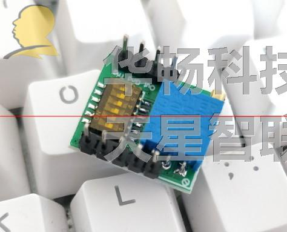
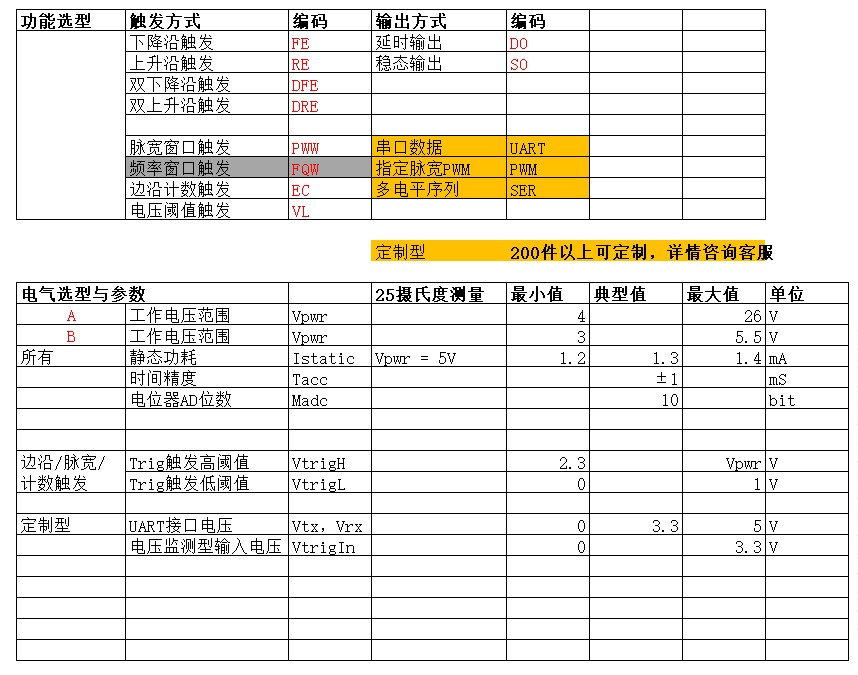
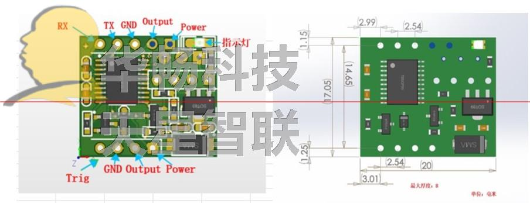
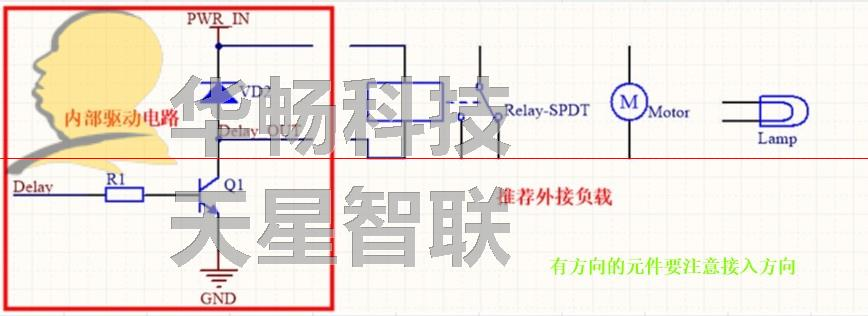

介绍与选型¶

1、产品介绍¶
数字型触发延时模块，抛弃传统的模拟型控制原理，以程序控制替代原始的门电路模型，达到更加灵活精准的控制体验。
- 触发条件
- 下降沿触发/上升沿触发
- 双下降沿触发/双上升沿触发
- 脉宽监测触发
- 计数监测触发
- UART/RS485 远程监控触发
- 输出类型
- 延时输出 类似于单稳态电路，可以精确控制到ms级的延时控制
- 反转输出 类似于双稳态电路，可以实现开关功能
- 高低序列 定制的高低输出序列或者PWM方波
- 应用
- 每种触发条件都可以配置防抖功能，最大限度防止误触发
- 通过程序修改，可以定制任意的触发与输出组合
- 远程控制开关，并确认控制结果
- 通过脉宽监控实现看门狗功能
- 通过计数监控实现自动控制
- 特点
- 硬件防抖配置
- 硬件延时配置
- 功能定制
- 超宽工作电压 3~5.5V 或 4 ~ 28V
- 超强输出驱动能力 1.5A电流
- 带UART，兼容Modbus RTU协议
- 防反接
- 超小体积
- 所有模块引脚兼容
2、主要指标¶
| 工作电压 | 4V ~ 25V 或 3V ~ 5.5V |
| 静态功耗 | 1.3mA @ 5V |
| 工作温度 | -40 ºC 至 +70 ºC |
| 延时精度 | ±1ms |
| 通讯 | UART TTL电平 3.3V 兼容Modbus RTU协议 |
| 输出能力 | 1500mA |
| AD采集精度 | 10 bits |

3、对外接口¶

RX UART接收引脚 3.3V TTL电平 TX UART发射引脚 3.3V TTL电平 GND 供电电源 地 Output 对外输出驱动引脚 OD输出端 Power 供电电源 4V ~ 25V Trig 输入触发引脚 输入范围0~Power
4、红色指示灯¶
板载一颗红色LED用于指示 输出状态。当LED点亮时，表明对外提供驱动电流，否则，表示无输出电流。
5、驱动部分电路¶
板载驱动电路为NPN型OD电路，默认板载一颗回流二极管，跨接与OD输出端与
输入电源。外部可以直接接入感性负载，比如继电器，小型马达。对于有方向的外部负载，一定要
注意接入方向。
警告
对于4V-28V供电型的模块，板载宽电压LDO转换为3.3V。当供电电压超过15V时，当电源导通时，由于LDO的过充效应，会瞬间产生比较高的过充电压，导致损坏模块元件引起功能失效。而模块限于体积，无法布局更多的缓启动电路，所以需要用户在供电电源输入侧自行增加缓启动电路。切记！